Bourgeon
Création d'une identité visuelle
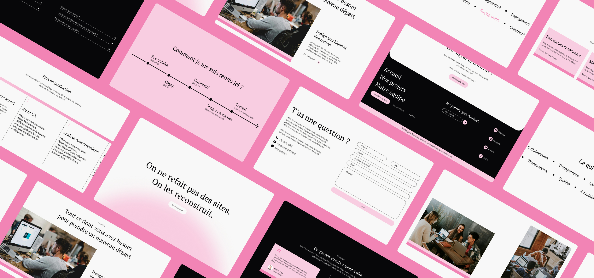
Nous avons utilisés l'AI pour la création de contenus et aide pour corriger le code php
Dans le cadre de mon cours d’environnement professionnel, nous devions créer, en équipe de quatre, l’identité visuelle d’une entreprise fictive et concevoir son site web.
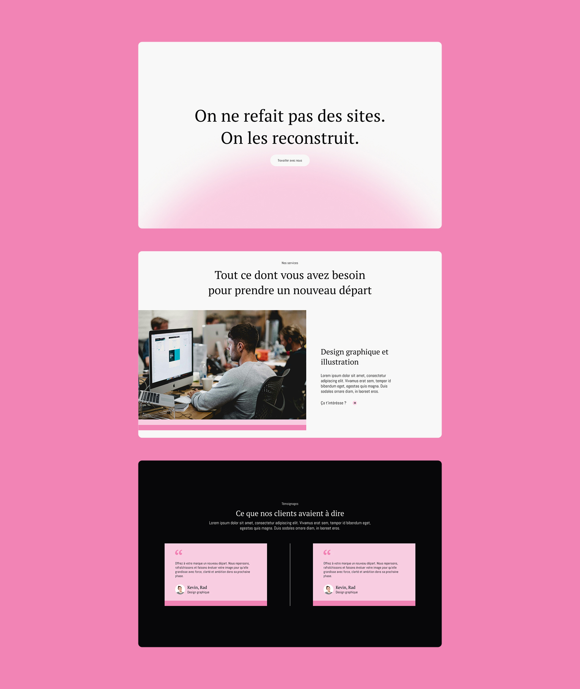
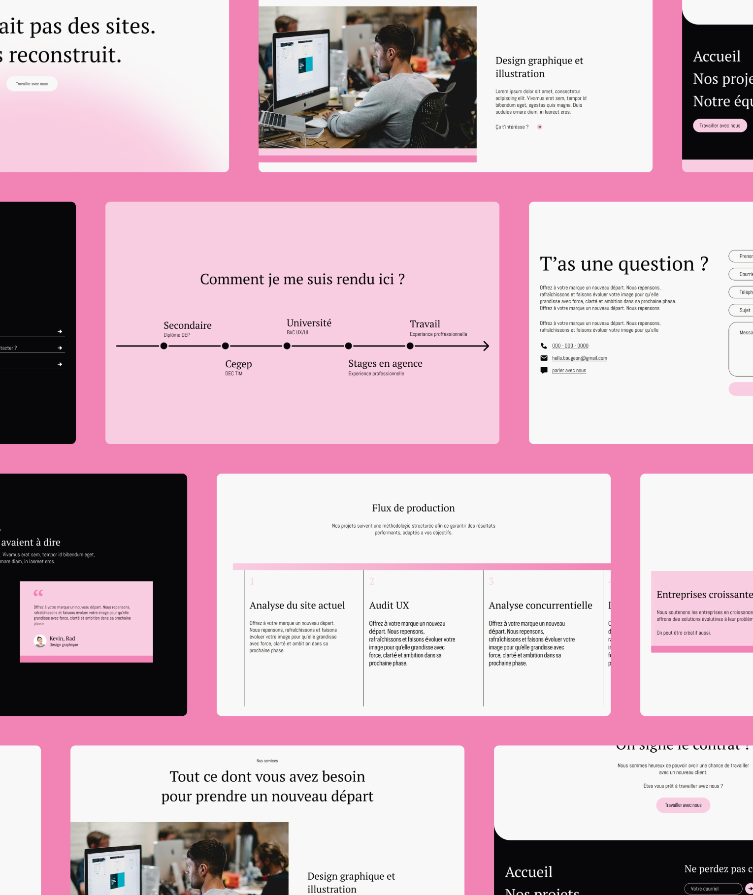
En équipe de 4 étudiant.es, nous étions amenés à créer le site web d’une entreprise fictive en démarrage (Startup), qui offre des services multimédia.
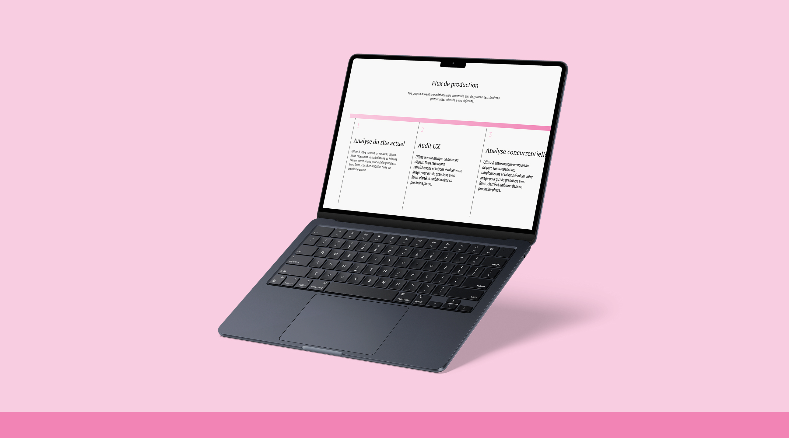
Les différents outils, logiciels et techniques utilisés pour ce projet
sortes
compétence
en gros
J’ai choisi un rose pâle et beaucoup de photos pour humaniser le site. Je voulais créer une identité visuelle accueillante et mettre de l’avant le côté humain.
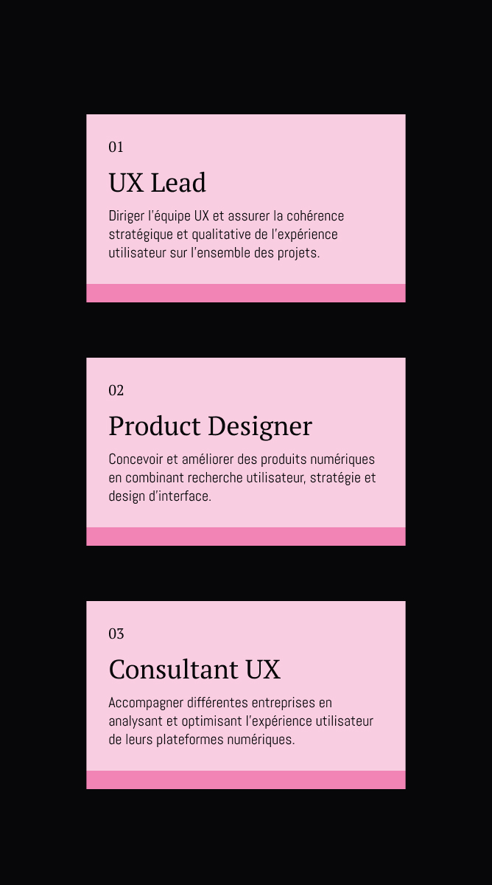
Légende
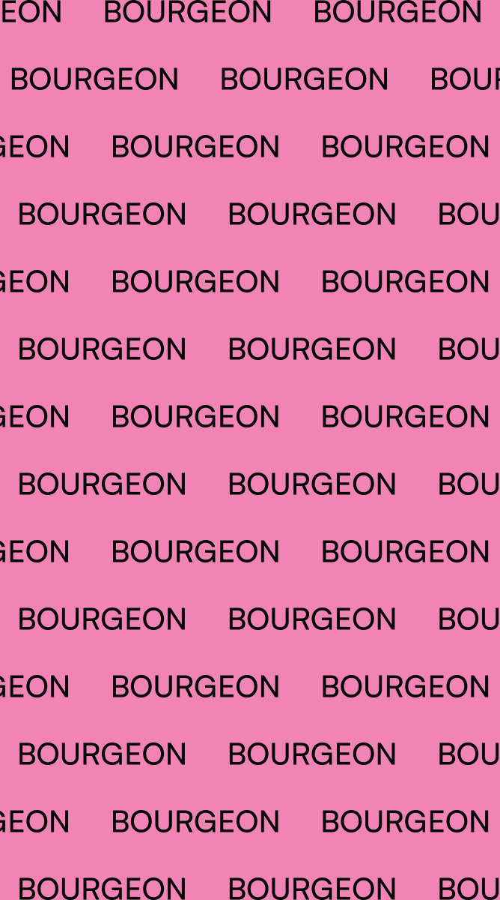
Légende
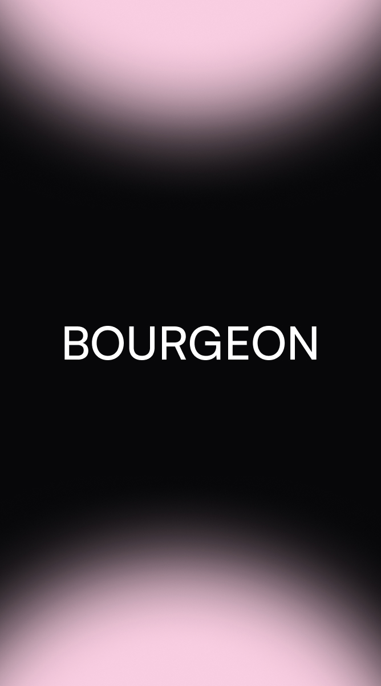
Légende
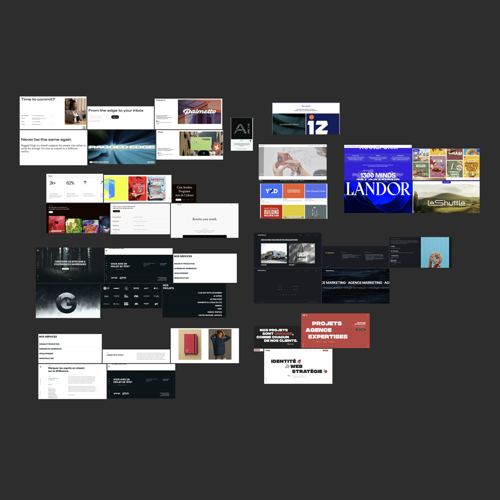
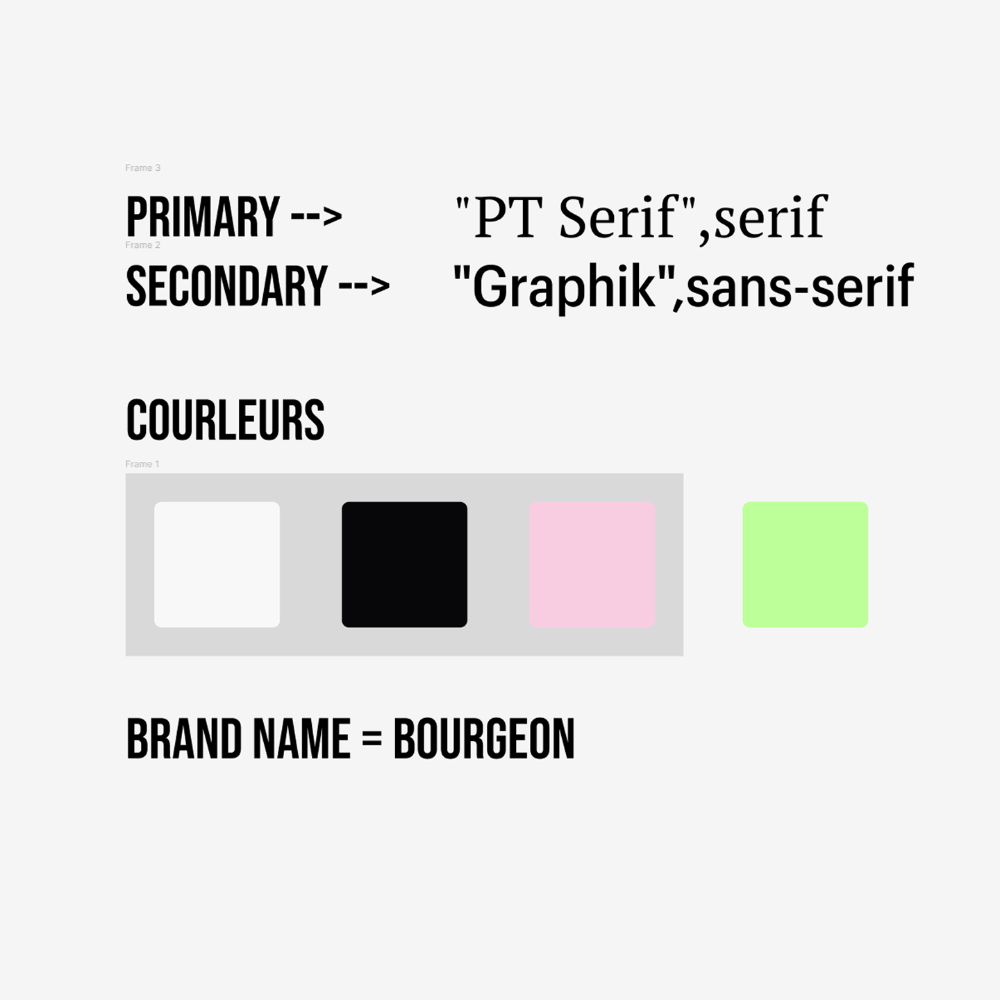
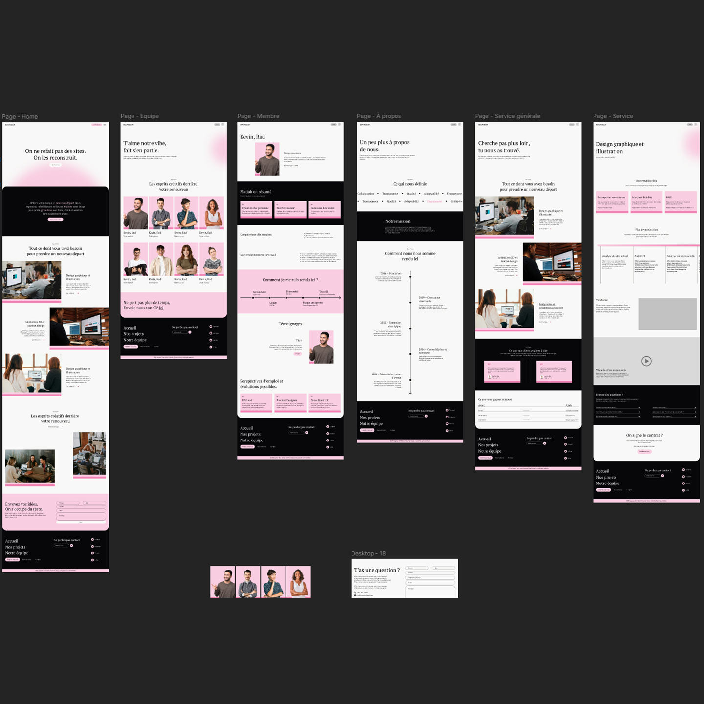
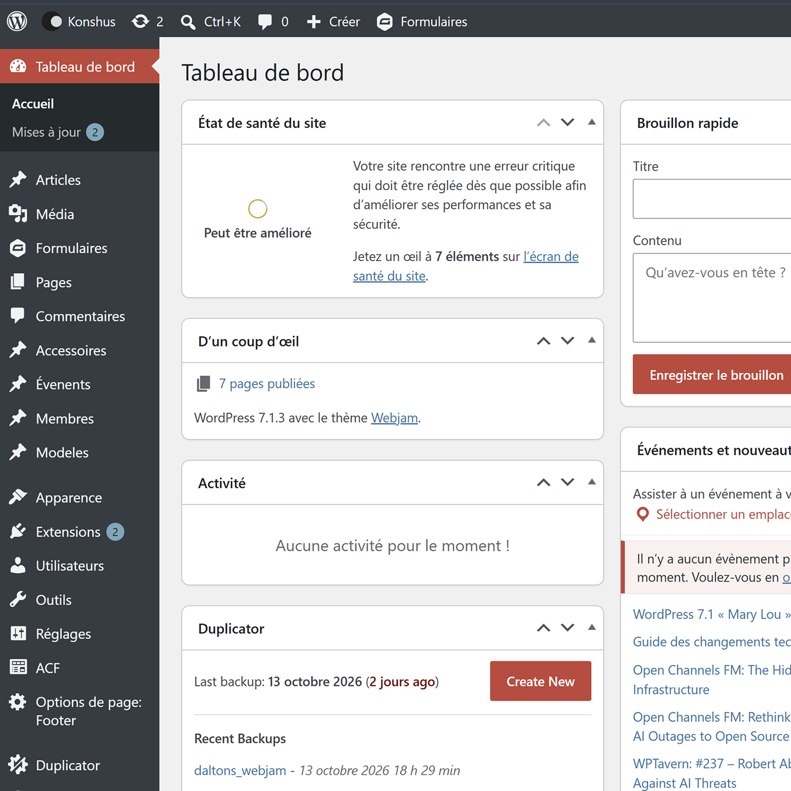
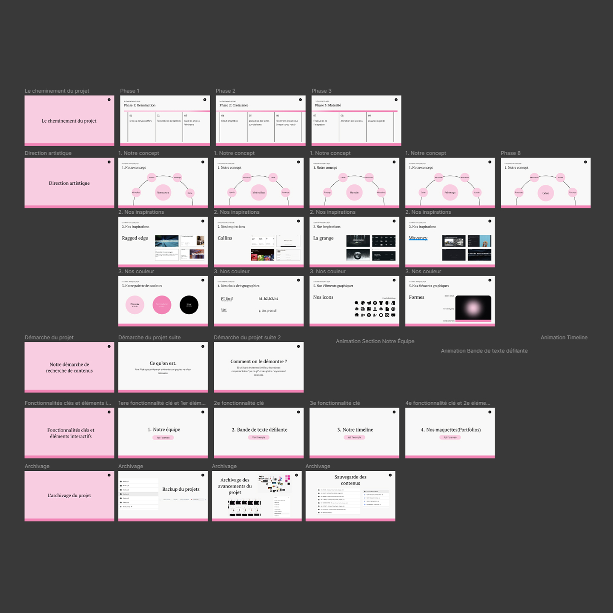
Voici les 5 étapes majeures de ce projet qui l’ont mené à sa complétion.
étape
titre
en gros
Dans ce projet, j’ai appris à mieux travailler en équipe et à prendre un rôle de leader. J’ai aussi appris à créer une identité visuelle complète et à assurer une unité visuelle cohérente dans l’ensemble du projet.
Ce projet a été réalisé dans le cadre de mon portfolio afin de créer une identité visuelle qui représente